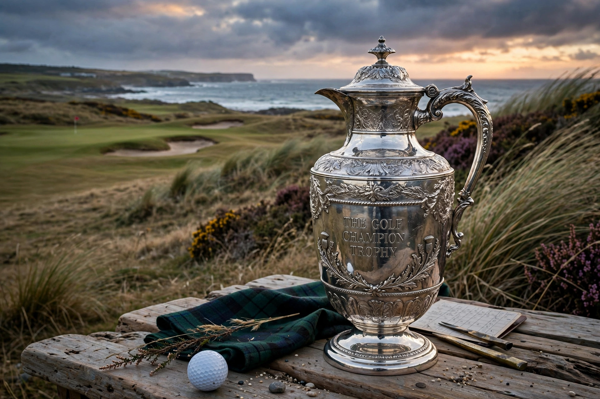

From Wikipedia, the free encyclopedia
| The Open Championship | |
|---|---|
 The Claret Jug trophy held aloft against the backdrop of a Scottish links course | |
| Established | 1860 (Prestwick) |
| Organised by | The R&A |
| Courses | Links courses in Scotland, England and Northern Ireland (rotation) |
| When | Third week of July |
| Trophy | The Claret Jug (officially the Golf Champion Trophy) |
| Most wins | Harry Vardon (6) |
The Open Championship, often referred to simply as The Open or the British Open, is the oldest golf tournament in the world and one of the sport's four major championships. First played in 1860 at Prestwick in Scotland, it is organised by The R&A and is the only major held outside the United States. The Open is always played on a coastal links course — windswept, firm, duneland golf in the game's original form — rotating among venues in Scotland, England and Northern Ireland including the Old Course at St Andrews, Royal Birkdale, Muirfield, Royal Troon and Royal Portrush. The champion receives the Claret Jug and the title "Champion Golfer of the Year".
The first Open was an eight-man professional event won by Willie Park Sr.; Young Tom Morris won four consecutive titles before his early death, and the Claret Jug replaced the original Challenge Belt in 1872. Harry Vardon won a record six Opens around the turn of the century. In the modern era the championship produced famous duels such as Tom Watson and Jack Nicklaus's "Duel in the Sun" at Turnberry in 1977, and Watson's near-miss at age 59 at the same course in 2009. Tiger Woods won three Opens, including a record eight-shot, bogey-free-performance win at St Andrews in 2000.
Held in mid-July as the final major of the year, after the Masters, the PGA Championship and the U.S. Open, The Open is decided by 72 holes of stroke play with a four-hole playoff if required. Its links tests, changeable weather and deep history make it, for many, the truest championship in golf.
Categories: The Open Championship | Golf tournaments in the United Kingdom | Major championships in golf